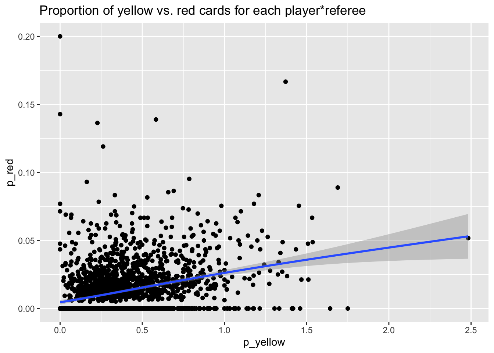

library(ggplot2)
library(dplyr)
Attaching package: 'dplyr'The following objects are masked from 'package:stats':
filter, lagThe following objects are masked from 'package:base':
intersect, setdiff, setequal, unionThis document generates some visualizations of the data described in (Silberzahn et al., 2018).
library(ggplot2)
library(dplyr)
Attaching package: 'dplyr'The following objects are masked from 'package:stats':
filter, lagThe following objects are masked from 'package:base':
intersect, setdiff, setequal, unionAn OSF project hosts the data at: https://osf.io/fv8c3.
Gilmore likes to make these workflows automated using specialized packages, so he downloaded the osfr package from CRAN, see also (Wolen et al., 2020).
Since the file does not change often and has not changed recently, we set eval = params$download_data in this document’s YAML header so that we could update the file in the future by rendering the document with params$download_data set to TRUE.
if (params$download_data) {
message("Re-downloading data from 'https://osf.io/fv8c3'.")
} else {
message("`params$upload_data` is FALSE. Data not downloaded again.")
message("The following chunk is shown for completeness, but is skipped here.")
}`params$upload_data` is FALSE. Data not downloaded again.The following chunk is shown for completeness, but is skipped here.osf_silberzahn_node = "https://osf.io/fv8c3"
# Save file to temp directory
this_file <-
osfr::osf_retrieve_file(basename(osf_silberzahn_node)) |>
osfr::osf_download(path = tempdir(),
progress = TRUE,
conflicts = "overwrite")
# Extract to target directory
if (xfun::file_ext(this_file$name) == "zip") {
utils::unzip(this_file$local_path,
exdir = paste0(here::here(), "/src/surveys/csv"))
}The data is saved as a CSV in /src/surveys/csv/CrowdstormingDataJuly1st.csv.
red_cards <-
readr::read_csv(
paste0(
here::here(),
"/src/surveys/csv/CrowdstormingDataJuly1st.csv"
),
show_col_types = FALSE
)
str(red_cards)spc_tbl_ [146,028 × 28] (S3: spec_tbl_df/tbl_df/tbl/data.frame)
$ playerShort : chr [1:146028] "lucas-wilchez" "john-utaka" "abdon-prats" "pablo-mari" ...
$ player : chr [1:146028] "Lucas Wilchez" "John Utaka" "Abdón Prats" "Pablo Marí" ...
$ club : chr [1:146028] "Real Zaragoza" "Montpellier HSC" "RCD Mallorca" "RCD Mallorca" ...
$ leagueCountry: chr [1:146028] "Spain" "France" "Spain" "Spain" ...
$ birthday : chr [1:146028] "31.08.1983" "08.01.1982" "17.12.1992" "31.08.1993" ...
$ height : num [1:146028] 177 179 181 191 172 182 187 180 193 180 ...
$ weight : num [1:146028] 72 82 79 87 70 71 80 68 80 70 ...
$ position : chr [1:146028] "Attacking Midfielder" "Right Winger" NA "Center Back" ...
$ games : num [1:146028] 1 1 1 1 1 1 1 1 1 1 ...
$ victories : num [1:146028] 0 0 0 1 1 0 1 0 0 1 ...
$ ties : num [1:146028] 0 0 1 0 0 0 0 0 1 0 ...
$ defeats : num [1:146028] 1 1 0 0 0 1 0 1 0 0 ...
$ goals : num [1:146028] 0 0 0 0 0 0 0 0 0 0 ...
$ yellowCards : num [1:146028] 0 1 1 0 0 0 0 0 0 0 ...
$ yellowReds : num [1:146028] 0 0 0 0 0 0 0 0 0 0 ...
$ redCards : num [1:146028] 0 0 0 0 0 0 0 0 0 0 ...
$ photoID : chr [1:146028] "95212.jpg" "1663.jpg" NA NA ...
$ rater1 : num [1:146028] 0.25 0.75 NA NA NA 0.25 0 1 0.25 0 ...
$ rater2 : num [1:146028] 0.5 0.75 NA NA NA 0 0.25 1 0.25 0 ...
$ refNum : num [1:146028] 1 2 3 3 3 4 4 4 4 4 ...
$ refCountry : num [1:146028] 1 2 3 3 3 4 4 4 4 4 ...
$ Alpha_3 : chr [1:146028] "GRC" "ZMB" "ESP" "ESP" ...
$ meanIAT : num [1:146028] 0.326 0.203 0.37 0.37 0.37 ...
$ nIAT : num [1:146028] 712 40 1785 1785 1785 ...
$ seIAT : num [1:146028] 0.000564 0.010875 0.000229 0.000229 0.000229 ...
$ meanExp : num [1:146028] 0.396 -0.204 0.588 0.588 0.588 ...
$ nExp : num [1:146028] 750 49 1897 1897 1897 ...
$ seExp : num [1:146028] 0.0027 0.0615 0.001 0.001 0.001 ...
- attr(*, "spec")=
.. cols(
.. playerShort = col_character(),
.. player = col_character(),
.. club = col_character(),
.. leagueCountry = col_character(),
.. birthday = col_character(),
.. height = col_double(),
.. weight = col_double(),
.. position = col_character(),
.. games = col_double(),
.. victories = col_double(),
.. ties = col_double(),
.. defeats = col_double(),
.. goals = col_double(),
.. yellowCards = col_double(),
.. yellowReds = col_double(),
.. redCards = col_double(),
.. photoID = col_character(),
.. rater1 = col_double(),
.. rater2 = col_double(),
.. refNum = col_double(),
.. refCountry = col_double(),
.. Alpha_3 = col_character(),
.. meanIAT = col_double(),
.. nIAT = col_double(),
.. seIAT = col_double(),
.. meanExp = col_double(),
.. nExp = col_double(),
.. seExp = col_double()
.. )
- attr(*, "problems")=<externalptr> Let’s see if we can understand more about the data.
red_cards |>
ggplot() +
aes(x = yellowCards) +
geom_histogram(fill = "yellow") +
ggtitle("Distribution of yellow cards given specific player*ref interaction")`stat_bin()` using `bins = 30`. Pick better value with `binwidth`.
red_cards |>
ggplot() +
aes(redCards) +
geom_histogram(fill = "red") +
ggtitle("Distribution of red cards given specific player*ref interaction")`stat_bin()` using `bins = 30`. Pick better value with `binwidth`.
Let’s group by player and see how the number of yellow and red cards appear as a function of player.
by_player <- red_cards |>
dplyr::group_by(playerShort) |>
dplyr::summarise(n_games = n(), n_yellow = sum(yellowCards), n_red = sum(redCards)) |>
dplyr::mutate(p_yellow = n_yellow/n_games, p_red = n_red/n_games)Now, let’s look at these distributions.
by_player |>
ggplot() +
aes(x = p_yellow) +
geom_histogram(fill = "yellow")`stat_bin()` using `bins = 30`. Pick better value with `binwidth`.by_player |>
ggplot() +
aes(x = p_red) +
geom_histogram(fill = "red")`stat_bin()` using `bins = 30`. Pick better value with `binwidth`.
So, there’s something odd going on with p_yellow. This should be in [0,1].
by_player |> dplyr::filter(p_yellow > 1)# A tibble: 63 × 6
playerShort n_games n_yellow n_red p_yellow p_red
<chr> <int> <dbl> <dbl> <dbl> <dbl>
1 adam-bodzek 56 66 0 1.18 0
2 aduriz 63 68 4 1.08 0.0635
3 albelda 147 197 6 1.34 0.0408
4 alberto-botia 45 69 3 1.53 0.0667
5 alexis 53 77 4 1.45 0.0755
6 allan-nyom 37 42 0 1.14 0
7 amorebieta 85 93 4 1.09 0.0471
8 apono 43 45 1 1.05 0.0233
9 arribas_2 38 48 2 1.26 0.0526
10 ballesteros 110 128 5 1.16 0.0455
# ℹ 53 more rowsWait, a player can get more than one yellow card per game. Doh!
Let’s see if the yellow and red cards relate to one another.
by_player |>
ggplot() +
aes(x = p_yellow, y = p_red) +
geom_point() +
geom_smooth() +
ggtitle("Yellow vs. red cards")`geom_smooth()` using method = 'gam' and formula = 'y ~ s(x, bs = "cs")'
Let’s try to visualize the ratings of skin tone along side this.
by_player_skin <- red_cards |>
dplyr::group_by(playerShort) |>
dplyr::summarise(
n_games = n(),
n_yellow = sum(yellowCards),
n_red = sum(redCards),
rater1 = mean(rater1),
rater2 = mean(rater2)
) |>
dplyr::mutate(p_yellow = n_yellow / n_games, p_red = n_red / n_games, skin = (rater1 + rater2)/2)by_player_skin |>
ggplot() +
aes(x = skin, y = p_yellow, group = as.factor(skin)) +
geom_violin() +
geom_point(color = "yellow") +
ggtitle("Distribution of skin tone and yellow cards given")Warning: Removed 468 rows containing non-finite values (`stat_ydensity()`).Warning: Removed 468 rows containing missing values (`geom_point()`).by_player_skin |>
ggplot() +
aes(x = skin, y = p_red, group = as.factor(skin)) +
geom_violin() +
geom_point(color = "red") +
ggtitle("Distribution of skin tone and red cards given")Warning: Removed 468 rows containing non-finite values (`stat_ydensity()`).Warning: Removed 468 rows containing missing values (`geom_point()`).
by_player_skin |>
ggplot() +
aes(x = p_yellow, y = p_red, size = as.factor(skin), group = 1) +
geom_point() +
geom_smooth() +
ggtitle("Yellow vs. (per ref encounter/game) red cards")Warning: Using `size` aesthetic for lines was deprecated in ggplot2 3.4.0.
ℹ Please use `linewidth` instead.Warning: Using size for a discrete variable is not advised.`geom_smooth()` using method = 'gam' and formula = 'y ~ s(x, bs = "cs")'Warning: The following aesthetics were dropped during statistical transformation: size
ℹ This can happen when ggplot fails to infer the correct grouping structure in
the data.
ℹ Did you forget to specify a `group` aesthetic or to convert a numerical
variable into a factor?Warning: Removed 468 rows containing missing values (`geom_point()`).
That’s hard to read, so let’s focus on players with skin > .5.
by_player_skin |>
dplyr::filter(skin > .5) |>
ggplot() +
aes(x = p_yellow, y = p_red) +
geom_point() +
geom_smooth() +
ggtitle("Yellow vs. (per ref encounter/game) red cards for darker-skinned players")`geom_smooth()` using method = 'loess' and formula = 'y ~ x'
And for completeness, let’s look at the lighter-skinned players.
by_player_skin |>
dplyr::filter(skin <= .5) |>
ggplot() +
aes(x = p_yellow, y = p_red) +
geom_point() +
geom_smooth() +
ggtitle("Yellow vs. red cards (per ref encounter/game) for lighter skinned players")`geom_smooth()` using method = 'gam' and formula = 'y ~ s(x, bs = "cs")'
Now let’s focus on the referees.
by_ref <- red_cards |>
dplyr::group_by(refNum) |>
dplyr::summarise(n_games = n(),
n_yellow = sum(yellowCards),
n_red = sum(redCards)) |>
dplyr::mutate(p_yellow = n_yellow / n_games, p_red = n_red / n_games)by_ref |>
ggplot() +
aes(x = p_yellow) +
geom_histogram(fill = "yellow") +
ggtitle("Yellow cards per game given by referees")`stat_bin()` using `bins = 30`. Pick better value with `binwidth`.
by_ref |>
ggplot() +
aes(x = p_red) +
geom_histogram(fill = "red") +
ggtitle("Red cards per game given by referees")`stat_bin()` using `bins = 30`. Pick better value with `binwidth`.
by_ref |>
ggplot() +
aes(x = p_yellow, y = p_red) +
geom_point() +
geom_smooth() +
ggtitle("Yellow vs. red cards by referee")`geom_smooth()` using method = 'gam' and formula = 'y ~ s(x, bs = "cs")'